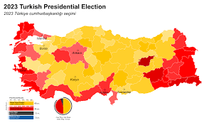

Elections 2023:
A Pivotal Moment for Democracy

The year 2023 marks a pivotal moment for democracy as countries around the world head to the polls to elect their leaders. Elections serve as a cornerstone of democratic governance, allowing citizens to exercise their right to vote and have a say in shaping the future of their nation. In various regions, voters are casting their ballots to elect presidents, prime ministers, members of parliament, and local representatives. The outcome of these elections will not only determine the direction of individual countries but may also have far-reaching implications on the global stage. One of the key themes in this year's elections is the call for political reform and social change. Citizens are voicing their demands for more transparent, accountable, and inclusive governance. Issues such as income inequality, healthcare, education, climate change, and social justice are taking center stage in political debates. The role of technology in modern elections cannot be understated. Social media and digital platforms have become powerful tools for political campaigns to reach voters and disseminate information. However, the spread of misinformation and fake news poses significant challenges to electoral integrity. Furthermore, the rise of populism and nationalist movements has reshaped the political landscape in many countries. These ideologies appeal to citizens' frustrations and fears, leading to significant shifts in traditional political dynamics. Election security is also a pressing concern in the digital age. Safeguarding electoral systems from cyber threats and ensuring the integrity of the voting process are paramount to upholding the legitimacy of election results. As the world becomes increasingly interconnected, the impact of one country's election can reverberate globally. Foreign policy, trade agreements, and international relations can all be influenced by the outcome of elections in key nations. It is crucial for citizens to stay informed, engage in critical thinking, and participate actively in the democratic process. Elections are not only about choosing leaders; they are about shaping the collective future and standing up for the values that define a nation. In conclusion, the elections of 2023 represent an essential moment in the ongoing journey of democracy. As citizens exercise their right to vote, they are shaping the course of history and determining the path their country will take. Let us embrace this opportunity and work towards a more just, inclusive, and democratic world.
Back to Articles